pacman::p_load(
readr, # for importing data
tidyverse, # for data manipulation and visualization
sf, # for spatial data handling
tmap, # for thematic maps
lubridate, # for date/time manipulation
spatstat, # for point pattern analysis
ggstatsplot, # for statistical data viz
maptools, # for spatial object manipulation
raster, # for raster data handling
sp, # for spatial data classes and methods
leaflet, # for interactive maps
ggplot2, # for advanced plotting
spNetwork, # for spatial network analysis
sparr, # for spatio-temporal analysis
KernSmooth # for kernel smoothing
)
set.seed(1234)Take-home Exercise 1
Set up
Load packages
Load files
In this section, we will load and prepare the datasets necessary for our analysis of road traffic accidents in the Bangkok Metropolitan Region (BMR). The BMR, also known as Greater Bangkok, encompasses the city of Bangkok and its surrounding provinces. According to Wikipedia, this area includes Bangkok itself and five adjacent provinces: Nakhon Pathom, Pathum Thani, Nonthaburi, Samut Prakan, and Samut Sakhon. Our analysis will focus on this region, which serves as the political, economic, and cultural heart of Thailand.
I will be working with three primary datasets: Thailand Road Accident data from 2019-2022, road network data from OpenStreetMap, and administrative boundary data. These datasets will allow me to conduct a comprehensive spatio-temporal analysis of road traffic accidents in this densely populated and economically significant area of Thailand.
Data Wrangling 1: Correct Coordinate Reference System
In preparing our analysis of road traffic accidents in the Bangkok Metropolitan Region, care is taken to ensure our data is accurate and spatially consistent. First, we import the road accident data from 2019 to 2022 using read_csv(), a function chosen for its robust handling of various CSV formats (includes automatic reading of headers and correct tagging of date and time columns). Crucially, we filter out records with missing or empty longitude and latitude values. This step is vital as geographic coordinates are the cornerstone of our spatial analysis; including records without valid locations would skew our results and potentially lead to misleading conclusions about accident patterns.
We then transform this data into a spatial format using st_as_sf(). This conversion is essential as it allows us to perform spatial operations and visualisations. We specify the coordinate reference system (CRS) as EPSG:32647, which is tailored for Thailand. This was double-checked on https://epsg.io/. This choice is deliberate - using a local CRS ensures more accurate distance calculations and area representations compared to a global system like WGS84. For the road network data, sourced from OpenStreetMap, we employ st_read() to load the shapefile. Recognizing that OSM data can sometimes contain geometry inconsistencies, we apply st_make_valid(). This crucial step corrects any invalid geometries that could potentially crash our analysis or produce erroneous results in spatial operations. Lastly, we import administrative boundary data, again ensuring it aligns with our chosen CRS.
rdacc_sf <- read_csv("C:/zzzzzuu/ISSS626GAA/Take-home_Ex/Take-home_Ex01/data/thai_road_accident_2019_2022.csv") %>%
filter(!is.na(longitude) & longitude != "",
!is.na(latitude) & latitude != "") %>%
st_as_sf(coords = c(
"longitude", "latitude"),
crs=4326) %>% #WGS84, decimel degree
st_transform(crs = 32647) #32647 is Thai's
#read_csv from Readr is better than read.csv base R. It matters for headers with spacing, and also can autodetect dates.
roads_sf <- st_read("C:/zzzzzuu/ISSS626GAA/Take-home_Ex/Take-home_Ex01/data/hotosm_tha_roads_lines_shp.shp") %>%
st_make_valid() %>%
st_set_crs(4326) %>%
st_transform(crs = 32647)
admin_sf <- st_read(dsn = "C:/zzzzzuu/ISSS626GAA/Take-Home_Ex/Take-Home_Ex01/data", layer = "tha_admbnda_adm1_rtsd_20220121") %>%
st_set_crs(4326) %>%
st_transform(crs = 32647)class(admin_sf) # check class
class(rdacc_sf)
class(roads_sf)Check date and time format (POSIXct)
class(rdacc_sf$incident_datetime)
class(rdacc_sf$report_datetime)The incident_datetime and report_datetime fields are stored in POSIXct format, a structure that captures year, month, date, and time information. This format allows for easy extraction of specific temporal components such as month, day of the year, or year via lubridate package. The level of detail and flexibility in datetime handling is only available when the data is properly imported and parsed using readr.
Data Wrangling 2: Filtering to a smaller subset of data
The initial datasets cover all of Thailand and include various road types, which makes the dataset bloated and difficult to use. To focus on the Bangkok Metropolitan Region (BMR), a spatial filter is applied to extract data for Bangkok and its five adjacent provinces: Nakhon Pathom, Pathum Thani, Nonthaburi, Samut Prakan, and Samut Sakhon. This step reduces data volume and ensures geographic relevance. Additionally, the road network data is filtered to include only roads accessible to motor vehicles, excluding roads like pedestrian paths and cycling lanes. These filtering processes enhance the accuracy of the subsequent analysis by focusing on relevant geographic areas and road types where motor vehicle accidents are likely to occur.
bangkok_areas <- c("Bangkok",
"Nonthaburi",
"Samut Prakan",
"Pathum Thani",
"Samut Sakhon",
"Nakhon Pathom")
admin_sf_bkk <- admin_sf %>%
filter(!is.na(ADM1_EN) & ADM1_EN %in% bangkok_areas)
unique(admin_sf_bkk$ADM1_EN) #check
plot(st_geometry(admin_sf_bkk)) #check, eval has been set to false, so no plots yet
st_geometry_type(admin_sf_bkk) #check
rdacc_sf_bkk <- rdacc_sf %>%
filter(!is.na(province_en) & province_en %in% bangkok_areas)
unique(rdacc_sf_bkk$province_en) #check
plot(st_geometry(rdacc_sf_bkk)) #check
roads_sf_bkk <- st_intersection(roads_sf, admin_sf_bkk)
unique(roads_sf_bkk$highway) #check
roads_sf_bkk_veh <- roads_sf_bkk %>%
filter(!is.na(highway) &
!(highway %in% c("pedestrian",
"bridleway",
"cycleway",
"footway",
"steps",
"path")))
plot(st_geometry(roads_sf_bkk_veh)) #check
Thailand Highway Classification
Refer to https://wiki.openstreetmap.org/wiki/WikiProject_Thailand#Highway_classification for definitions of different roads and access that is legally allowed.
Converting MULTILINESTRINGs to LINESTRINGs
The road network data contains both linestrings and multilinestrings. Multilinestrings represent complex road segments with multiple connected lines, while linestrings are single, continuous lines. Converting all geometries to linestrings simplifies the data structure, ensuring uniformity across the dataset, and makes it easier for lixelisation. Having multistrings may result in error. This conversion is necessary for consistent analysis, as many spatial operations work more efficiently with simple linestring geometries.
geometry_types <- roads_sf_bkk_veh %>%
st_geometry_type() %>%
as.character() %>%
unique()
#check for linestrings and multistrings
if(length(geometry_types) == 1 && geometry_types == "LINESTRING") {
print("All geometries are LINESTRING")
} else {
print("Not all geometries are LINESTRING. Types found:")
print(geometry_types)
}
#convert to linstrings only
roads_sf_bkk_veh_ls <- roads_sf_bkk_veh %>%
st_cast("MULTILINESTRING", group_or_split = TRUE) %>%
st_cast("LINESTRING")
geometry_types <- roads_sf_bkk_veh_ls %>%
st_geometry_type() %>%
as.character() %>%
unique()
#check for linestrings and multistrings again to double confirm
if(length(geometry_types) == 1 && geometry_types == "LINESTRING") {
print("All geometries are LINESTRING")
} else {
print("Not all geometries are LINESTRING. Types found:")
print(geometry_types)
}Write a smaller subset of the data for easier compute times
This segment makes our data smaller and easier to work with. It is saved in a special format (RDS) in a ‘sandbox’ folder. This helps my computer run faster and keeps the project tidy. I used commands to save and load data, and tell some parts of our code not to run again if not needed.
write_rds(roads_sf_bkk_veh_ls, "data/sandbox/roads.rds")
write_rds(rdacc_sf_bkk, "data/sandbox/rdacc.rds")
write_rds(admin_sf_bkk, "data/sandbox/admin.rds")roads <- read_rds("data/sandbox/roads.rds")
rdacc <- read_rds("data/sandbox/rdacc.rds")
admin <- read_rds("data/sandbox/admin.rds")Overall Analysis
Roads dataset is still too dense. It is difficult to make meaningful insights out of it, so we will drop more, smaller roads.
unique(roads$highway) [1] "secondary" "residential" "secondary_link" "service"
[5] "track" "tertiary" "primary" "primary_link"
[9] "unclassified" "trunk_link" "motorway_link" "motorway"
[13] "construction" "trunk" "corridor" "tertiary_link"
[17] "raceway" "busway" "road" "proposed" roads_filtered <- roads %>%
filter(!is.na(highway) &
(highway %in% c("secondary", #only keep these following types of roads
"secondary_link",
"primary",
"primary_link",
"trunk_link",
"trunk",
"motorway",
"motorway_link",
"tertiary_link",
"tertiary")))
plot(st_geometry(roads_filtered))
The road network seems reasonable to work with.
tmap_mode('plot')tmap mode set to plottingtm_shape(rdacc) +
tm_dots(col = "red", size = 0.1) +
tm_shape(roads_filtered) +
tm_lines()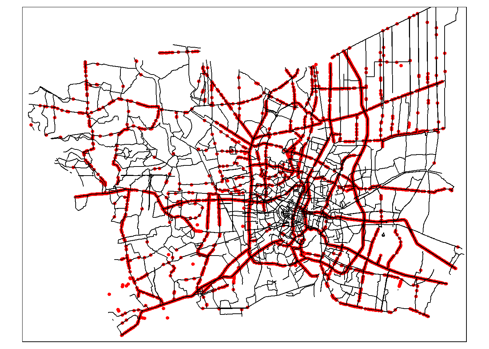
tmap_mode('plot')Looks like everything is in order. The road accidents appear on the roads. A minority are not on roads as the road may have been a small one that I have filtered away. It appears to be a small portion and I am not too concerned about them.
Lixelisation
To prepare for Network Kernel Density Estimation (NKDE), the road network is divided into small, equal segments called lixels using the lixelize_lines() function from the spNetwork package. Lixels are like pixels for lines, allowing more precise analysis along the network. This process is crucial for accurately studying patterns of childcare centers along the road network. It creates a consistent unit of measurement, which is especially useful when dealing with irregular network structures.
lixels <- lixelize_lines(roads_filtered, # Create lixels from filtered roads
700,
mindist = 500)
samples <- lines_center(lixels) # Generate center points of lixels
densities <- nkde(roads_filtered,
events = rdacc,
w = rep(1, nrow(rdacc)), # Assign equal weight to each accident
samples = samples,
kernel_name = "quartic",
bw = 100, # Set bandwidth to 100 meters
div= "bw", # Divide by bandwidth
method = "simple",
digits = 1, # Round results to 1 decimal place
tol = 1,
grid_shape = c(4,4), # Set grid shape for calculations
max_depth = 8,
agg = 5, # Aggregate every 5 points
sparse = TRUE,
verbose = FALSE)
samples$density <- densities
lixels$density <- densities
summary(samples$density)The values seem small. The measurements must be in metres. Let’s correct that to km later. Let’s save the lixelised data first.
write_rds(lixels, "data/sandbox/lixels.rds")
write_rds(samples, "data/sandbox/samples.rds")Now let’s read in the data and correct the measurement.
lixels <- read_rds("data/sandbox/lixels.rds")
samples <- read_rds("data/sandbox/samples.rds")
samples$density <- samples$density*1000
lixels$density <- lixels$density*1000
summary(samples$density) Min. 1st Qu. Median Mean 3rd Qu. Max.
0.00000 0.00000 0.00000 0.01504 0.00000 2.58070 summary(lixels$density) Min. 1st Qu. Median Mean 3rd Qu. Max.
0.00000 0.00000 0.00000 0.01504 0.00000 2.58070 That looks better. From the quantiles, means and medians, it seems that the hotspots are quite scant and concentrated at the top. It would be good to merge everything below the mean, while having more granular breaks in the top quartile to examine the hot spots in more detail.
Let’s try to plot it.
Overall situation of road accidents in BMR
#This is to help me identify the road names, used in "View" mode. For website's puposes, I have changed to "plot" mode to save on memory, so you won't see the road name in the plot, but know that it is available.
lixels$display_name <- ifelse(is.na(lixels$name_en),
paste(lixels$highway,": Unnamed Road"),
paste(lixels$highway,": ",lixels$name_en))
tmap_mode('plot')tmap mode set to plottingcustom_breaks <- c(0, quantile(lixels$density, c(0.85,
0.9,
0.95,
0.99,
1)))
tm_shape(lixels) +
tm_lines(col = "density",
id = "display_name",
breaks = custom_breaks,
palette = "YlOrRd",
lwd = 1.5)+
tm_shape(admin) +
tm_borders(col = "black", lwd = 2, alpha = 0.5)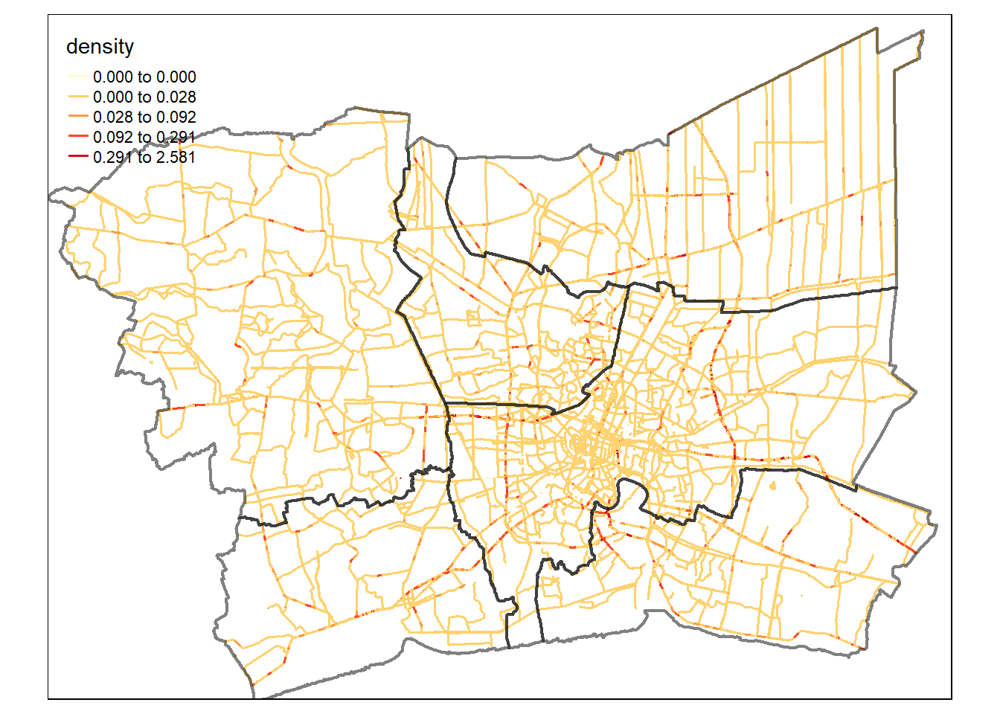
The accident density map of Bangkok and its surrounding provinces reveals patterns in road safety across the region. The central area, primarily Bangkok, exhibits some concentrations of accident hotspots, indicating a greater risk in the urban core. This concentration likely correlates with higher population density, increased traffic volume, and more complex road networks typical of major city centers.
While accident density generally decreases towards the outskirts, there are notable hotspots in the peripheral areas surrounding Bangkok. These could represent key transportation corridors or rapidly developing suburban zones with high traffic flow. It looks like this happens mainly on the Kanchanaphisek Road.
The skewed distribution of accident densities, as shown in the legend, highlights the presence of extreme hotspots amid generally moderate-to-high risk areas. This pattern underscores the need for targeted interventions in specific high-risk locations while also addressing broader regional safety concerns. We should look into them.
The specific roads that warrant more attention are:
Kanchanaphisek Road (both east and west portions of the long road)
Bangkok-Chonburi Motorway
Borommaratchachonnani Road
Rama II Road
Suk Sawat Road
Industrial Ring Road
Deeper dive analysis
Given the large number of road accidents in BMR, the following graphs will help me scope down to the geospatial area where accidents happen. This is notably non-geospatial analysis, but still a good place to start to understand the patterns at play.
Temporal analysis of road accidents (non-geospatial segment)
In the following analysis, let’s examine temporal patterns of road accidents in the Bangkok Metropolitan Region from 2019 to 2022. Let’s visualize accident frequencies across different time scales, including hours of the day, days of the week, months, and years. This temporal breakdown will help identify high-risk periods influencing accident rates.
# Ensure datetime columns are properly formatted
rdacc$incident_datetime <- ymd_hms(rdacc$incident_datetime)Warning: 16 failed to parse.# Create new columns for analysis
rdacc_inc <- rdacc %>%
mutate(
hour = hour(incident_datetime),
day_of_week = wday(incident_datetime, label = TRUE),
month = month(incident_datetime, label = TRUE),
year = year(incident_datetime)
)
# Accidents by hour of day
ggplot(rdacc_inc, aes(x = hour)) +
geom_bar() +
labs(title = "Accidents by Hour of Day", x = "Hour", y = "Number of Accidents")Warning: Removed 16 rows containing non-finite outside the scale range
(`stat_count()`).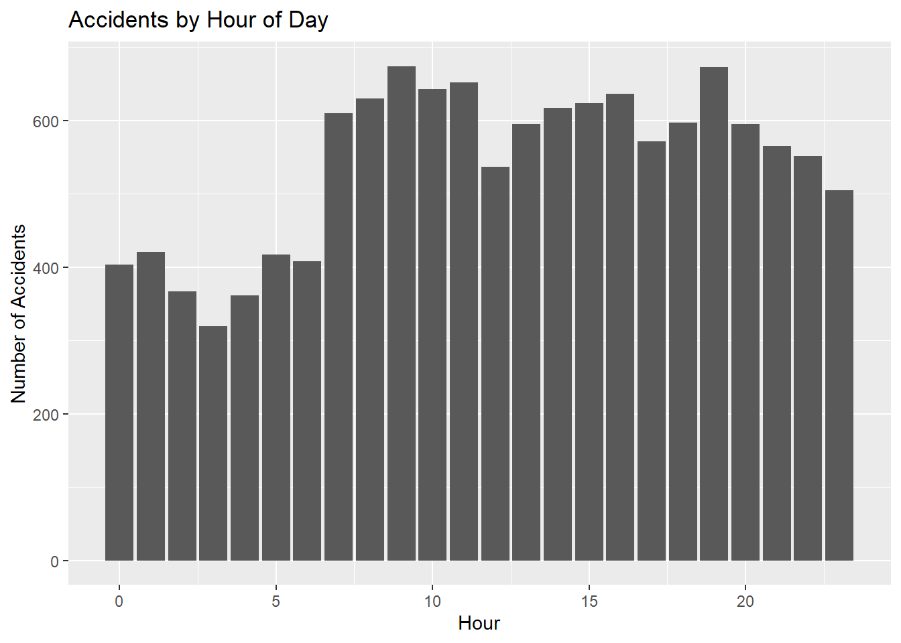
#Insight: Accidents appear to happen from 7am to 11am and 7pm.
# Accidents by day of week
ggplot(rdacc_inc, aes(x = day_of_week)) +
geom_bar() +
labs(title = "Accidents by Day of Week", x = "Day", y = "Number of Accidents")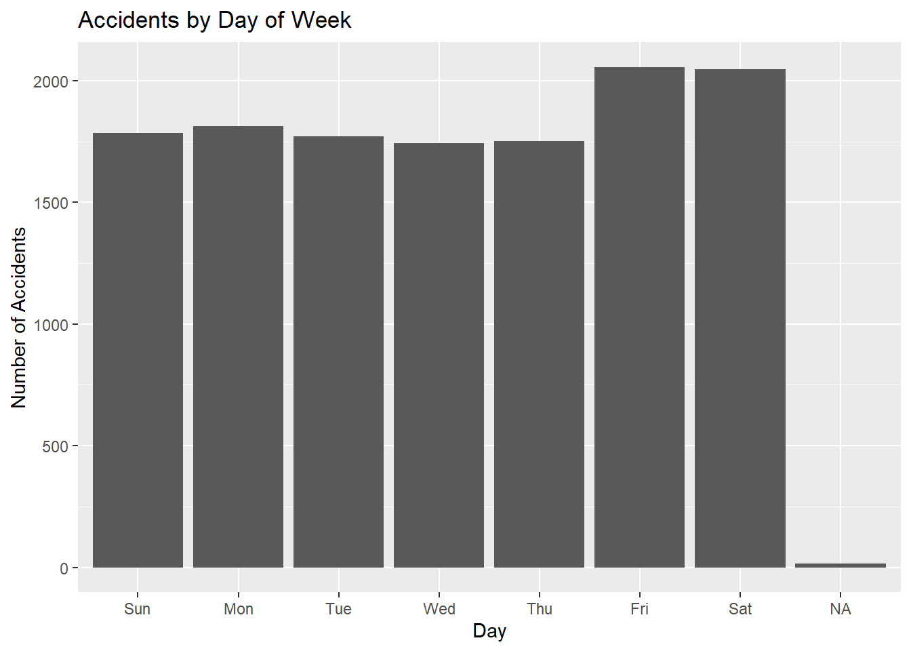
#Insight: Accidents appear to happen on Friday and Saturday.
# Accidents by month
ggplot(rdacc_inc, aes(x = month)) +
geom_bar() +
labs(title = "Accidents by Month", x = "Month", y = "Number of Accidents")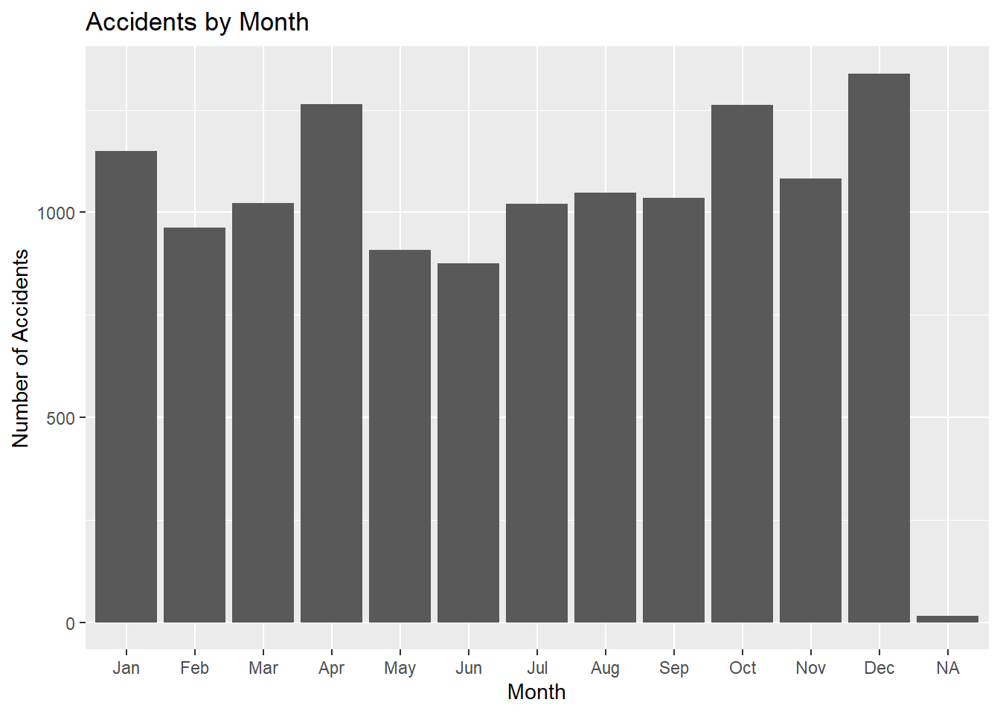
#Insight: Accidents appear to happen In Dec, Jan, Apr, and Oct.
# Time series of accidents by date
rdacc_inc %>%
count(date = as.Date(incident_datetime)) %>%
ggplot(aes(x = date, y = n)) +
geom_line() +
labs(title = "Daily Accident Counts Over Time", x = "Date", y = "Number of Accidents")Warning: Removed 1 row containing missing values or values outside the scale range
(`geom_line()`).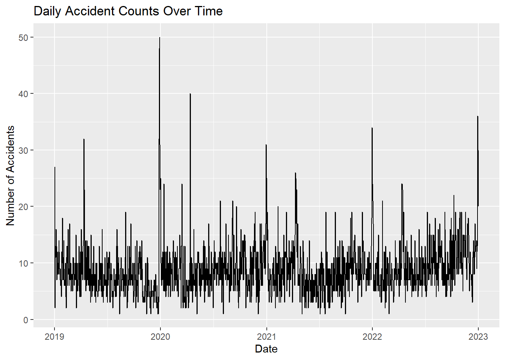
#Insight: Accidents spike every year in Jan/ Dec and Apr.
# Time series of accidents by year
ggplot(rdacc_inc, aes(x = year)) +
geom_bar() +
labs(title = "Accidents by Year", x = "Year", y = "Number of Accidents")Warning: Removed 16 rows containing non-finite outside the scale range
(`stat_count()`).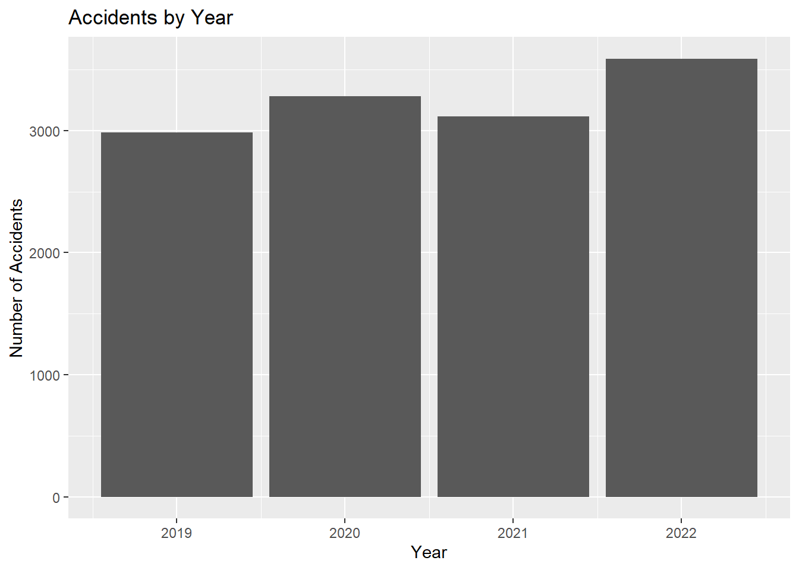
#Insight: Fluctuating with a graduate increase per year.Let’s take a look at two heatmaps that examines when accidents happen.
library(viridis)Warning: package 'viridis' was built under R version 4.3.3Loading required package: viridisLiterdacc_time <- rdacc %>%
mutate(
month = month(incident_datetime, label = TRUE, abbr = TRUE),
hour = hour(incident_datetime)
)
accident_counts <- rdacc_time %>%
count(month, hour)
ggplot(accident_counts, aes(x = hour, y = month, fill = n)) +
geom_tile() +
scale_fill_viridis(name = "Number of Accidents",
option = "inferno",
breaks = seq(20, 80, by = 20),
limits = c(20, 80)) +
scale_x_continuous(breaks = seq(0, 23, by = 3),
labels = c("12am", "3am", "6am", "9am", "12pm", "3pm", "6pm", "9pm")) +
scale_y_discrete(limits = rev(levels(accident_counts$month))) +
labs(title = "Heatmap of Accidents by Month and Time of Day",
subtitle = "Bangkok Metropolitan Region, 2019-2022",
x = "Time of Day",
y = "Month") +
theme_minimal() +
theme(
axis.text.x = element_text(angle = 45, hjust = 1),
panel.grid.major = element_blank(),
panel.grid.minor = element_blank(),
legend.position = "right",
plot.title = element_text(face = "bold", size = 14),
plot.subtitle = element_text(size = 12, color = "gray50"),
axis.title = element_text(face = "bold")
)Warning: Removed 1 row containing missing values or values outside the scale range
(`geom_tile()`).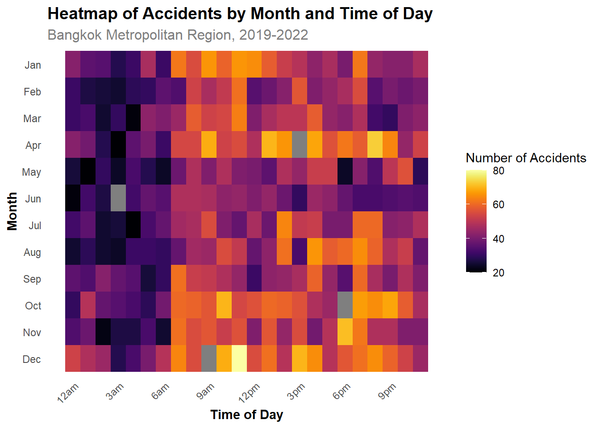
It appears that Jan, Apr, Oct, Dec is worth investigating.
Key observations:
Seasonal trends: Apr and Dec shows consistently high accident rates throughout the day. This could be related to increased holiday traffic or year-end celebrations.
Morning trends: There’s a noticeable increase in accidents starting around 6am across most months, likely corresponding to morning rush hour.
Night-time patterns: Accident rates generally decrease late at night (12am-3am), but remain somewhat elevated compared to early morning hours (3am-6am).
Focused look at Apr -> Lixelisation of Apr data
rdacc_apr <- rdacc %>%
filter(month(incident_datetime) == 4)
lixels_apr <- lixelize_lines(roads_filtered,
700,
mindist = 500)
samples_apr <- lines_center(lixels_apr)
densities_apr <- nkde(roads_filtered,
events = rdacc_apr,
w = rep(1, nrow(rdacc_apr)),
samples = samples_apr,
kernel_name = "quartic",
bw = 100,
div= "bw",
method = "simple",
digits = 1,
tol = 1,
grid_shape = c(4,4),
max_depth = 8,
agg = 5,
sparse = TRUE,
verbose = FALSE)
samples_apr$density <- densities_apr
lixels_apr$density <- densities_apr
summary(samples_apr$density)write_rds(lixels_apr, "data/sandbox/lixels_apr.rds")
write_rds(samples_apr, "data/sandbox/samples_apr.rds")lixels_apr <- read_rds("data/sandbox/lixels_apr.rds")
samples_apr <- read_rds("data/sandbox/samples_apr.rds")
samples_apr$density <- samples_apr$density*1000
lixels_apr$density <- lixels_apr$density*1000
summary(samples_apr$density) Min. 1st Qu. Median Mean 3rd Qu. Max.
0.000000 0.000000 0.000000 0.001457 0.000000 0.468568 summary(lixels_apr$density) Min. 1st Qu. Median Mean 3rd Qu. Max.
0.000000 0.000000 0.000000 0.001457 0.000000 0.468568 lixels_apr$display_name <- ifelse(is.na(lixels_apr$name_en),
paste(lixels_apr$highway,": Unnamed Road"),
paste(lixels_apr$highway,": ",lixels_apr$name_en))
tmap_mode('plot')tmap mode set to plottingcustom_breaks <- c(0, quantile(lixels_apr$density, c(0.99,
0.992,
0.994,
0.996,
0.998,
1)))
tm_shape(lixels_apr) +
tm_lines(col = "density",
id = "display_name",
breaks = custom_breaks,
palette = "YlOrRd",
lwd = 1.5)+
tm_shape(admin) +
tm_borders(col = "black", lwd = 2, alpha = 0.5)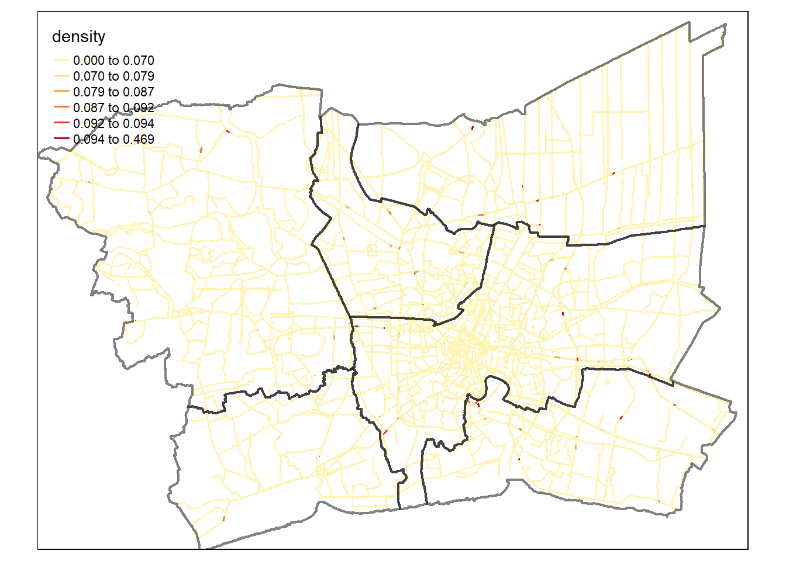
tmap_mode('plot')tmap mode set to plottingAccidents are spread across the entire region, but with varying densities. These highways seem to be attracting accidents:
Kanchanaphisek Road (east portion of the long road)
Bangkok-Chonburi Motorway
Borommaratchachonnani Road
Industrial Ring Road
Focused look at Jan and Dec -> Lixelisation of Jan+Dec data
rdacc_jandec <- rdacc %>%
filter(month(incident_datetime) %in% c(1, 12))
lixels_jandec <- lixelize_lines(roads_filtered,
700,
mindist = 500)
samples_jandec <- lines_center(lixels_jandec)
densities_jandec <- nkde(roads_filtered,
events = rdacc_jandec,
w = rep(1, nrow(rdacc_jandec)),
samples = samples_jandec,
kernel_name = "quartic",
bw = 100,
div= "bw",
method = "simple",
digits = 1,
tol = 1,
grid_shape = c(4,4),
max_depth = 8,
agg = 5,
sparse = TRUE,
verbose = FALSE)
samples_jandec$density <- densities_jandec
lixels_jandec$density <- densities_jandec
summary(samples_jandec$density)write_rds(lixels_jandec, "data/sandbox/lixels_jandec.rds")
write_rds(samples_jandec, "data/sandbox/samples_jandec.rds")lixels_jandec <- read_rds("data/sandbox/lixels_jandec.rds")
samples_jandec <- read_rds("data/sandbox/samples_jandec.rds")
samples_jandec$density <- samples_jandec$density*1000
lixels_jandec$density <- lixels_jandec$density*1000
summary(samples_jandec$density) Min. 1st Qu. Median Mean 3rd Qu. Max.
0.000000 0.000000 0.000000 0.002753 0.000000 0.658608 summary(lixels_jandec$density) Min. 1st Qu. Median Mean 3rd Qu. Max.
0.000000 0.000000 0.000000 0.002753 0.000000 0.658608 lixels_jandec$display_name <- ifelse(is.na(lixels_jandec$name_en),
paste(lixels_jandec$highway,": Unnamed Road"),
paste(lixels_jandec$highway,": ",lixels_jandec$name_en))
tmap_mode('plot')tmap mode set to plottingcustom_breaks <- c(0, quantile(lixels_jandec$density, c(0.99,
0.992,
0.994,
0.996,
0.998,
1)))
tm_shape(lixels_jandec) +
tm_lines(col = "density",
id = "display_name",
breaks = custom_breaks,
palette = "YlOrRd",
lwd = 1.5)+
tm_shape(admin) +
tm_borders(col = "black", lwd = 2, alpha = 0.5)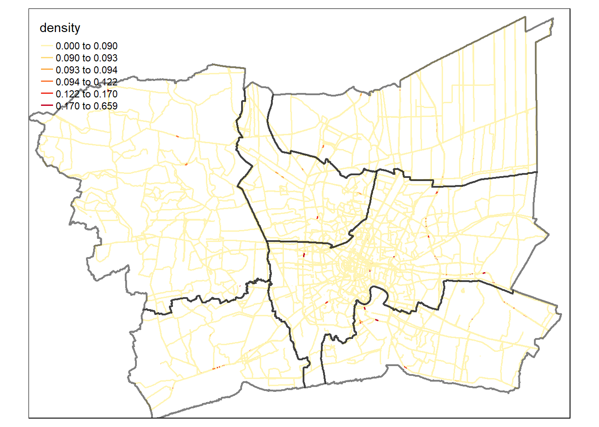
tmap_mode('plot')tmap mode set to plottingSimilar patterns observed from the Jan+Dec data with the Apr data.
We should be able to merge Apr accidents with that of Jan, Oct and Dec and generalise more.
Network constrained G and L function analysis
In this section, I’m going to test if the road accidents in Bangkok are randomly spread out or if they form patterns. I’ll use the kfunctions() from the spNetwork package to do this.
The idea I’m testing is: The road accidents are evenly spread out over Bangkok’s road network.
This test assumes the accidents could happen anywhere on the roads with equal chance. If the test shows this isn’t true, it might mean the accidents are happening in patterns or clusters, not just randomly.
As the road accident dataset was too large and resulted in runtime error on my machine, I needed to sample a subset of datapoints for the following analysis.
rdacc_focus <- rdacc %>%
filter(month(incident_datetime) %in% c(1,4,10,12)) %>%
slice_sample(n = 1000)kfun_rdacc <- kfunctions(roads_filtered,
rdacc_focus,
start = 0,
end = 1000,
step = 50,
width = 50,
nsim = 50,
resolution = 50,
verbose = FALSE,
conf_int = 0.05)
write_rds(kfun_rdacc, "data/sandbox/kfun_rdacc.rds")kfun_rdacc <- read_rds("data/sandbox/kfun_rdacc.rds")
kfun_rdacc$plotk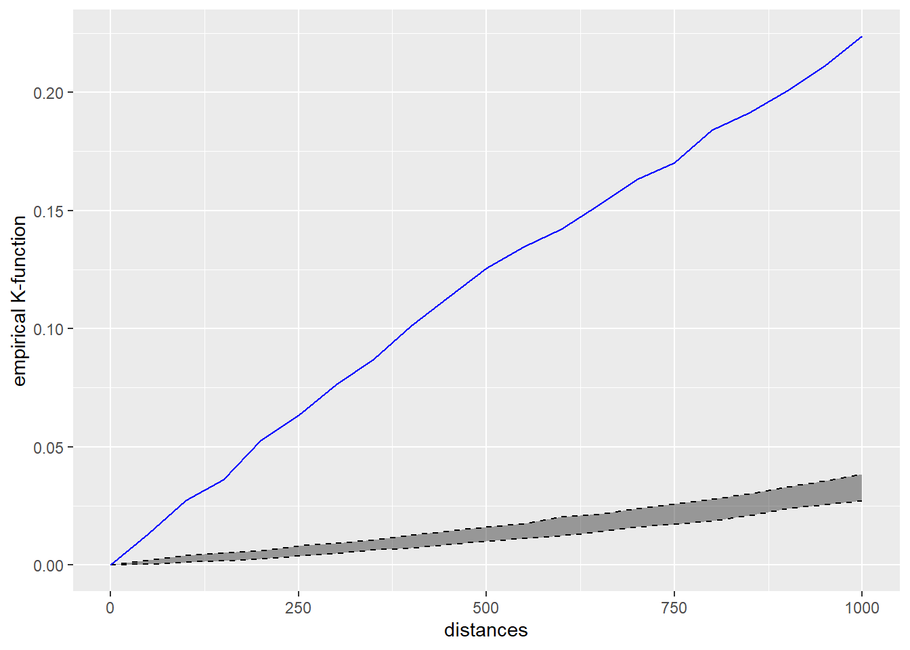
Insights from the K Function:
Road accidents BMR in Jan, Apr, Oct and Dec (holiday months) are not randomly distributed along the road network. They are clustered, as expected.
There are significant hotspots or areas of concentration for accidents.
This clustering exists at various scales, from local (short distances) to broader areas (longer distances).
The pattern suggests there might be specific factors (e.g., dangerous road segments, intersections, or broader area characteristics) contributing to higher accident rates in certain locations.
This provides a strong basis for further investigation into the factors causing these accident clusters and could be valuable for targeted road safety interventions.
Spatio-Temporal Point Patterns Analysis
First let’s create the owin file which will be used later.
admin_owin <- as.owin(admin)
admin_owinwindow: polygonal boundary
enclosing rectangle: [587893.5, 712440.5] x [1484413.7, 1579076.3] unitsNext, create the dataset to do spatio-temporal analysis. The plot shows how it generally looks like. Everything appears to be in order that road accidents happen on the road network, but it does not tell where it is concentrated in, and when it happens.
roads <- read_rds("data/sandbox/roads.rds")
rdacc <- read_rds("data/sandbox/rdacc.rds")
admin <- read_rds("data/sandbox/admin.rds")
rdacc_spatiotemporal <- rdacc %>%
mutate(DayofYear = yday(incident_datetime)) %>%
mutate(Month_num = month(incident_datetime)) %>%
mutate(Month_fac = month(incident_datetime,
label = TRUE,
abbr = FALSE))
tm_shape(admin) +
tm_borders() +
tm_shape(rdacc_spatiotemporal) +
tm_dots() 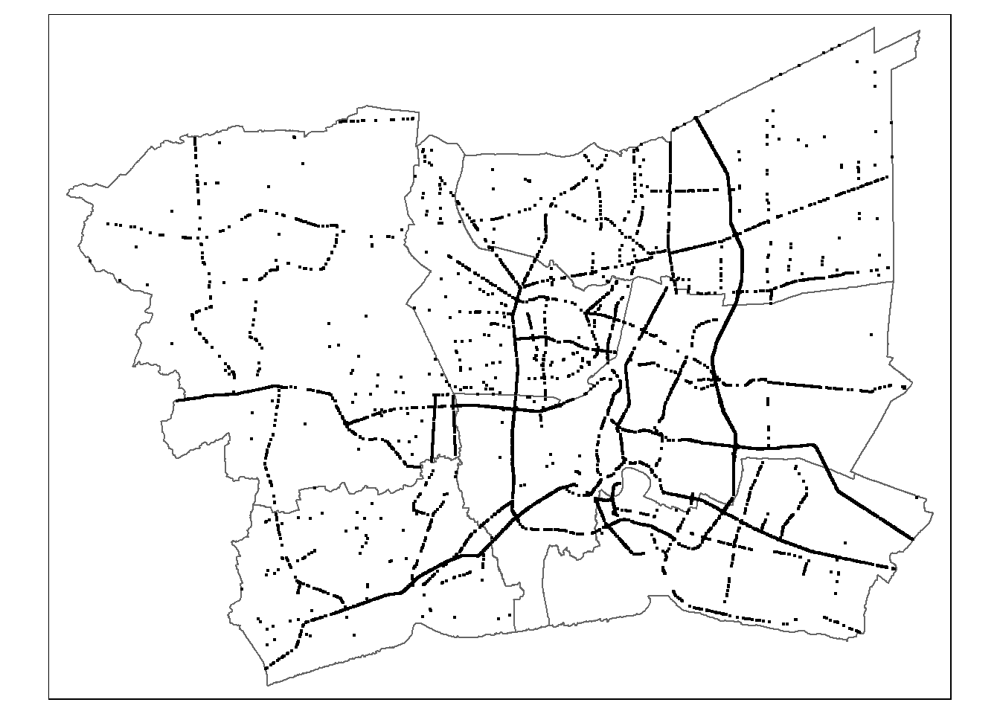
Temporal analysis
Let’s try a simple month breakdown first to see the seasonal changes across months.
tm_shape(admin)+
tm_polygons() +
tm_shape(rdacc_spatiotemporal) +
tm_dots(size = 0.1) +
tm_facets(by="Month_fac",
free.coords=FALSE,
drop.units = TRUE)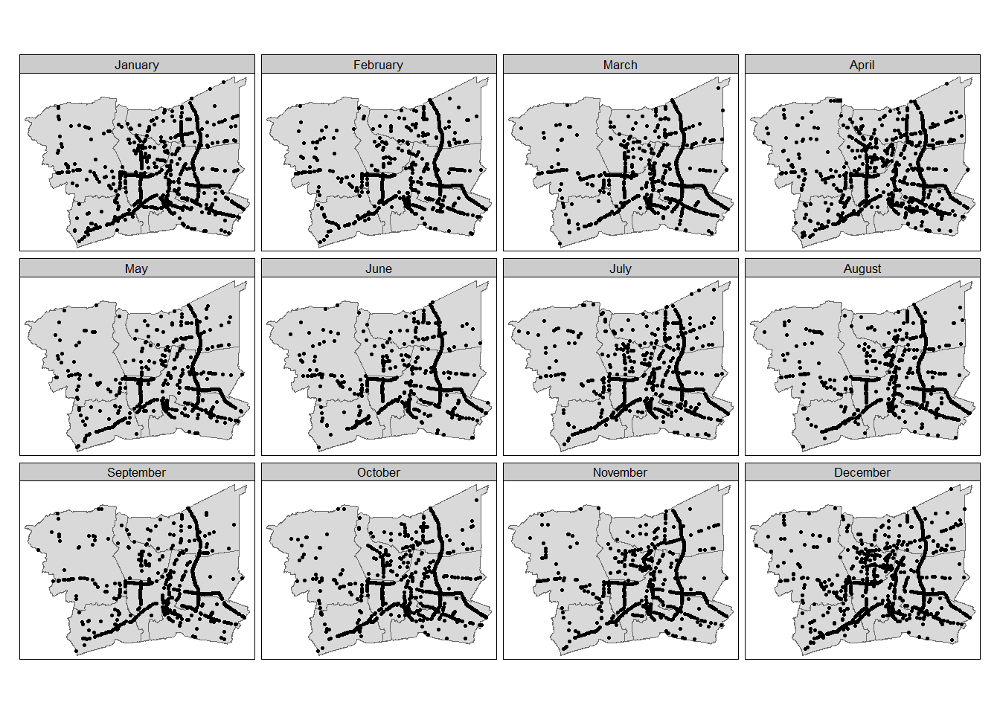
The December months appear more sparse, but that is roughly all I can tell from visual inspection.
To analyse with more statistical rigour, I’ll try to calculate a non-network constrained KDE to examine the hotspots. Simply put, it smooths the road accidents over the owin space. I will need to use ppp for this.
rdacc_spatiotemporal_month <- rdacc_spatiotemporal %>%
dplyr::select(Month_num)
rdacc_spatiotemporal_month_ppp <- as.ppp(rdacc_spatiotemporal_month)
rdacc_spatiotemporal_month_pppMarked planar point pattern: 12986 points
marks are numeric, of storage type 'double'
window: rectangle = [591277.5, 710166.1] x [1486845.7, 1576520.5] unitsany(duplicated(rdacc_spatiotemporal_month_ppp))[1] TRUErdacc_spatiotemporal_month_ppp_jit <- rjitter(rdacc_spatiotemporal_month_ppp,
retry=TRUE,
nsim=1,
drop=TRUE)
any(duplicated(rdacc_spatiotemporal_month_ppp_jit))[1] FALSEThis next segment plots the points within the owin.
rdacc_month_owin <- rdacc_spatiotemporal_month_ppp_jit[admin_owin]
summary(rdacc_month_owin)Marked planar point pattern: 12979 points
Average intensity 1.6924e-06 points per square unit
Coordinates are given to 10 decimal places
marks are numeric, of type 'double'
Summary:
Min. 1st Qu. Median Mean 3rd Qu. Max.
1.000 4.000 7.000 6.667 10.000 12.000
Window: polygonal boundary
single connected closed polygon with 13779 vertices
enclosing rectangle: [587893.5, 712440.5] x [1484413.7, 1579076.3] units
(124500 x 94660 units)
Window area = 7668990000 square units
Fraction of frame area: 0.65plot(rdacc_month_owin)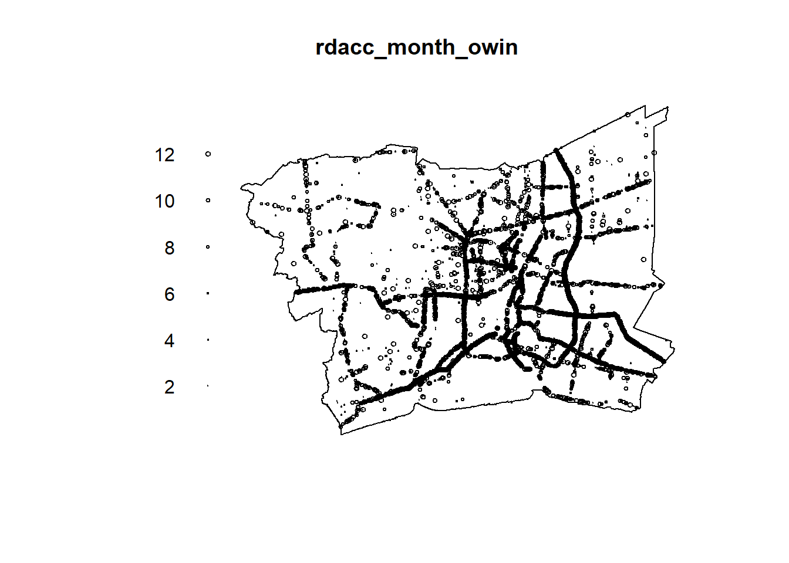
This next segment calculates the KDE within the owin.
st_kde <- spattemp.density(rdacc_month_owin)Calculating trivariate smooth...Done.
Edge-correcting...Done.
Conditioning on time...Done.summary(st_kde)Spatiotemporal Kernel Density Estimate
Bandwidths
h = 4255.367 (spatial)
lambda = 0.0114 (temporal)
No. of observations
12979
Spatial bound
Type: polygonal
2D enclosure: [587893.5, 712440.5] x [1484414, 1579076]
Temporal bound
[1, 12]
Evaluation
128 x 128 x 12 trivariate lattice
Density range: [4.83487e-18, 6.233343e-09]Let’s plot the months out to see how it shifts.
tims <- c(1:12)
par(mfcol=c(2,3))
for(i in tims){
plot(st_kde, i,
override.par=FALSE,
fix.range=TRUE,
main=paste("KDE at month",i))
}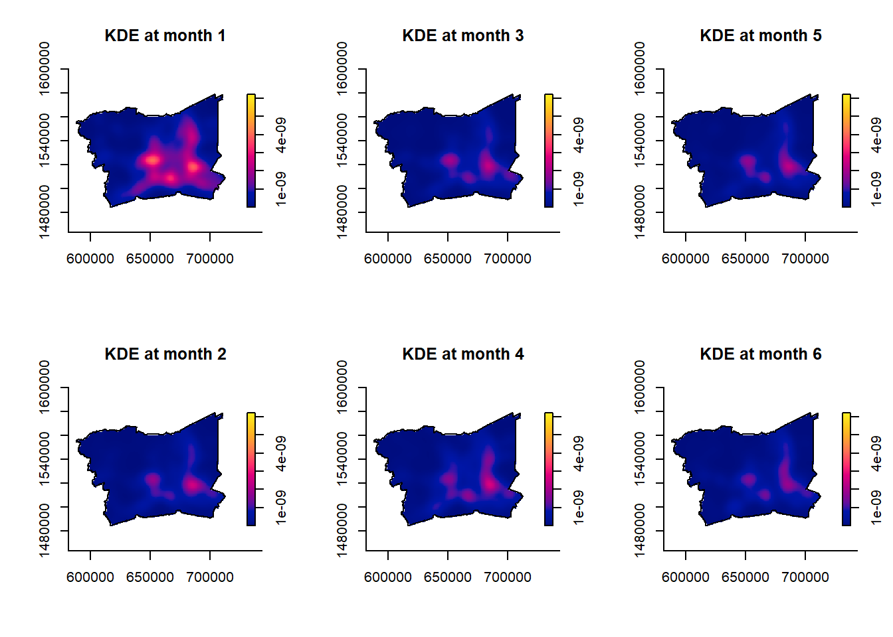
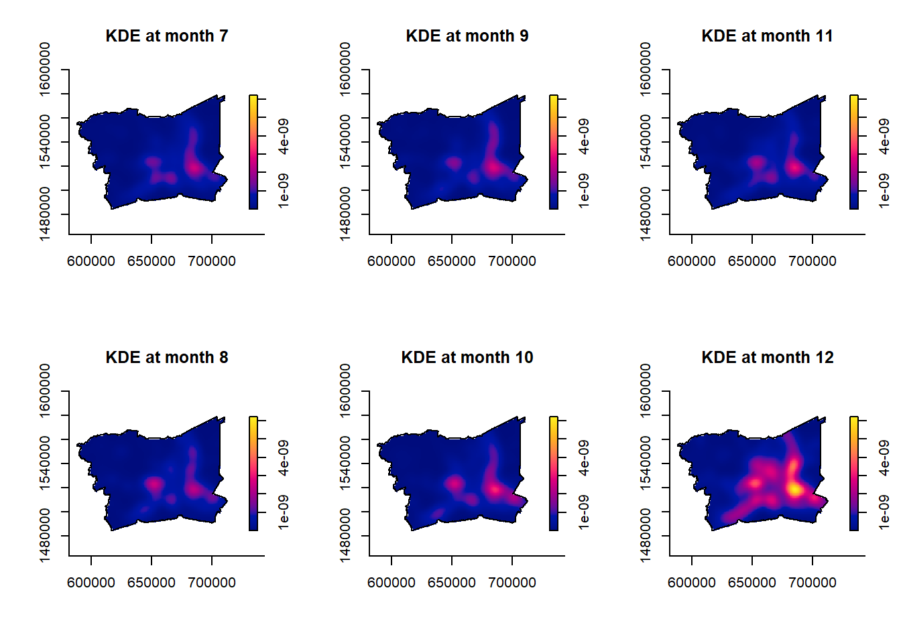
We can make it into a gif for easier examination of how the months change from each other.
create_and_save_plot <- function(i) {
png(filename = paste0("kde_plot_month_", i, ".png"),
width = 800, height = 600) # Adjust width and height as needed
plot(st_kde, i,
override.par = FALSE,
fix.range = TRUE,
main = paste("KDE at month", i))
dev.off()
}
# Create and save each plot separately
for(i in tims) {
create_and_save_plot(i)
}I examine the change using the below gif.
It does look like there is a slight increase in road accidents in Apr, but the larger increase is in December and January. However, this is not constrained to a network, so it still does not show which road the accidents are on. So this analysis is insufficient, and we need to explore a network constrained solution.
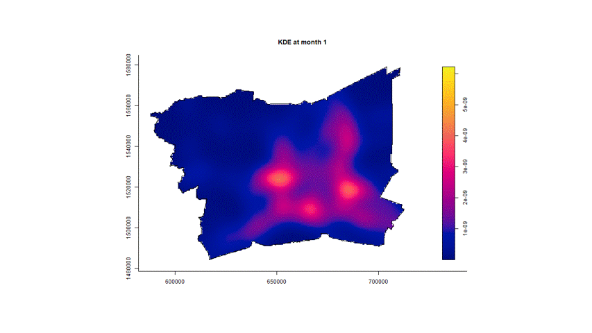
Let’s try network constraining the KDE. First, I’ll format the time so that it is counting days.
# converting the Date field to a numeric field (counting months)
rdacc_spatiotemporal <- rdacc
rdacc_spatiotemporal$Time <- as.POSIXct(rdacc_spatiotemporal$incident_datetime, format = "%Y/%m/%d")
start <- as.POSIXct("2019/01/01", format = "%Y/%m/%d")
end <- as.POSIXct("2022/12/31", format = "%Y/%m/%d")
rdacc_spatiotemporal$Time <- difftime(rdacc_spatiotemporal$Time, start, units = "days")
rdacc_spatiotemporal$Time <- as.numeric(rdacc_spatiotemporal$Time)
months <- as.character(1:12)
months <- ifelse(nchar(months)==1, paste0("0", months), months)
months_starts_labs <- paste("2019/",months,"/01", sep = "")
months_starts_num <- as.POSIXct(months_starts_labs, format = "%Y/%m/%d")
months_starts_num <- difftime(months_starts_num, start, units = "days")
months_starts_num <- as.numeric(months_starts_num)
months_starts_labs <- gsub("2019/", "", months_starts_labs, fixed = TRUE)
# Create breaks for each year
years <- seq(start, end, by = "year")
year_breaks <- as.numeric(difftime(years, start, units = "days"))
# Create labels for each year
year_labels <- format(years, "%Y")
ggplot(rdacc_spatiotemporal) +
geom_histogram(aes(x = Time), bins = 48, color = "white") + # 48 bins for monthly-like divisions
scale_x_continuous(breaks = year_breaks,
labels = year_labels,
limits = c(0, max(rdacc_spatiotemporal$Time))) +
labs(x = "Year", y = "Frequency", title = "Distribution of Incidents Over Time") +
theme_minimal() +
theme(axis.text.x = element_text(angle = 45, hjust = 1))Warning: Removed 2 rows containing missing values or values outside the scale range
(`geom_bar()`).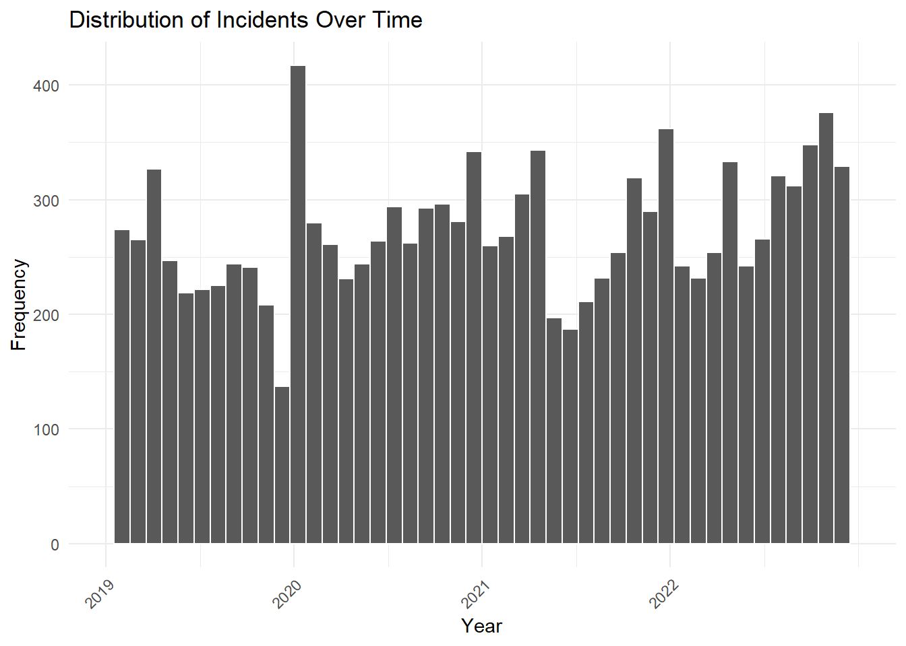
I shall smooth out the number of incidents across days.
w <- rep(1,nrow(rdacc_spatiotemporal))
samples <- seq(0, max(rdacc_spatiotemporal$Time), 0.5)
bw1 <- bw.bcv(rdacc_spatiotemporal$Time, nb = 1000, lower = 1, upper = 80)
bw2 <- bw.ucv(rdacc_spatiotemporal$Time, nb = 1000, lower = 1, upper = 80)
bw3 <- bw.SJ(rdacc_spatiotemporal$Time, nb = 1000, lower = 1, upper = 80)
time_kernel_values <- data.frame(
bw_bcv = tkde(rdacc_spatiotemporal$Time, w = w, samples = samples, bw = bw1, kernel_name = "quartic"),
bw_ucv = tkde(rdacc_spatiotemporal$Time, w = w, samples = samples, bw = bw2, kernel_name = "quartic"),
bw_SJ = tkde(rdacc_spatiotemporal$Time, w = w, samples = samples, bw = bw3, kernel_name = "quartic"),
time = samples
)
df_time <- reshape2::melt(time_kernel_values,id.vars = "time")
df_time$variable <- as.factor(df_time$variable)
ggplot(data = df_time) +
geom_line(aes(x = time, y = value)) +
scale_x_continuous(breaks = year_breaks,
labels = year_labels,
limits = c(0, max(rdacc_spatiotemporal$Time))) +
facet_wrap(vars(variable), ncol=2, scales = "free") +
theme(axis.text = element_text(size = 5))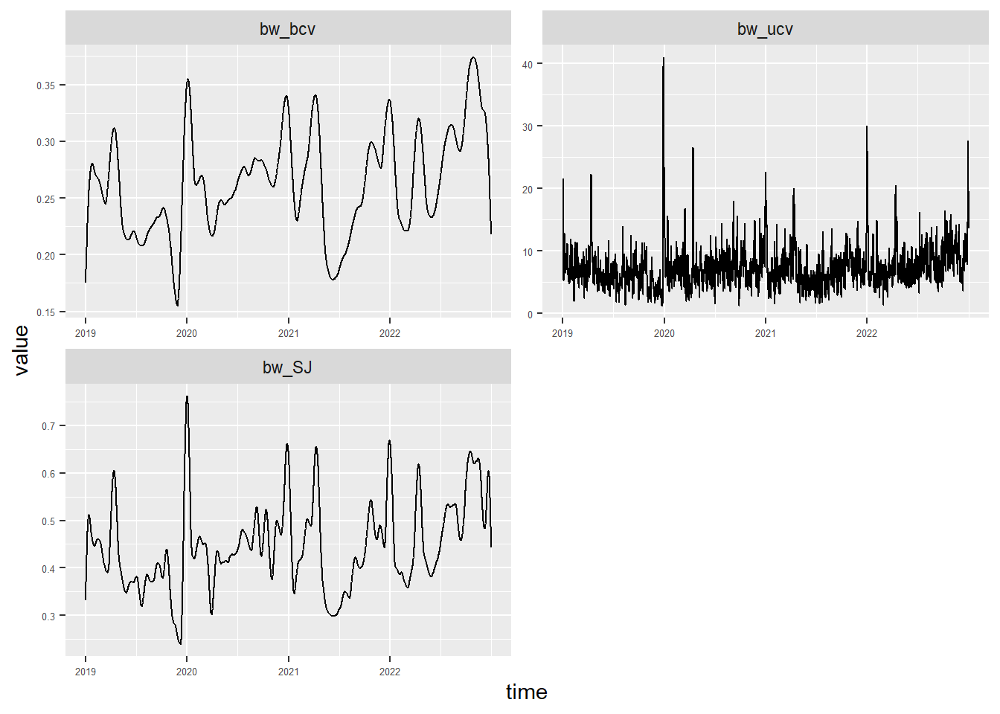
By comparing bandwidth selection methods, there are insights into the temporal patterns of road accidents . The BCV and SJ methods particularly highlight meaningful patterns compared to UCV method as it is too noisy and may lead to misinterpretation. It appears there are seasonal patterns as we have seen.
Spatio-temporal analysis with network constraint
Next we do spatio-temporal analysis to verify this observation. We start by examining the bandwidths that are required to have a useful smoothing.
cv_scores <- bw_tnkde_cv_likelihood_calc(
bws_net = seq(1000,10000,2000),
bws_time = seq(1,1460,200),
lines = roads_filtered,
events = rdacc_spatiotemporal,
time_field = "incident_datetime",
w = rep(1, nrow(rdacc_spatiotemporal)),
kernel_name = "quartic",
method = "discontinuous",
diggle_correction = FALSE,
study_area = NULL,
max_depth = 10,
digits = 2,
tol = 0.1,
agg = 10,
sparse=TRUE,
grid_shape=c(20,20),
sub_sample=1,
verbose = FALSE,
check = TRUE)
write_rds(cv_scores, "data/sandbox/cv_scores.rds")cv_scores <- read_rds("data/sandbox/cv_scores.rds")
knitr::kable(cv_scores)| 1 | 201 | 401 | 601 | 801 | 1001 | 1201 | 1401 | |
|---|---|---|---|---|---|---|---|---|
| 1000 | -706.1509 | -705.3445 | -704.8251 | -703.1704 | -702.8447 | -701.8549 | -700.9763 | -700.4512 |
| 3000 | -705.0980 | -704.1014 | -702.7534 | -700.4870 | -700.0528 | -698.6526 | -697.3181 | -696.6342 |
| 5000 | -704.4165 | -703.1201 | -701.5165 | -699.2029 | -698.5118 | -696.5971 | -694.6536 | -693.7567 |
| 7000 | -703.8892 | -702.2912 | -700.2770 | -697.2513 | -696.5538 | -694.4873 | -692.1887 | -690.9826 |
| 9000 | -703.6275 | -701.6716 | -699.3488 | -696.0194 | -695.1658 | -692.9957 | -690.0855 | -688.8752 |
The tables show that AIC does not really decrease much. So I shall pick a logical bandwidth to work with and proceed from there - 1km and 60 days.
But because the KDE calculation is producing errors due to large dataset, I chose to filter the road system again.
unique(roads$highway) [1] "secondary" "residential" "secondary_link" "service"
[5] "track" "tertiary" "primary" "primary_link"
[9] "unclassified" "trunk_link" "motorway_link" "motorway"
[13] "construction" "trunk" "corridor" "tertiary_link"
[17] "raceway" "busway" "road" "proposed" roads_filtered_again <- roads %>%
filter(!is.na(highway) &
(highway %in% c("secondary", #Dropped links to scope to smaller network
"primary",
"trunk",
"motorway")))
plot(st_geometry(roads_filtered_again))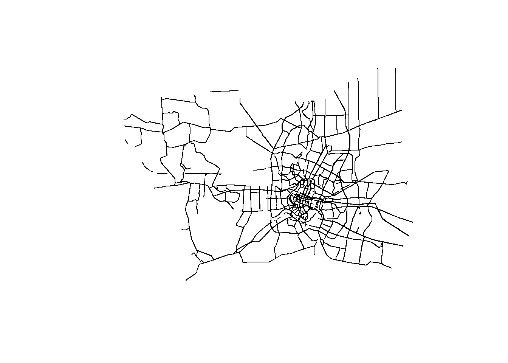
Above seems ok to use. However, my computer still couldn’t handle the load. So I have to use sampling to make the calculation possible. Below is the code to sample for a usable ammount of network and accidents.
# Redo this part just to be safe: converting the Date field to a numeric field (counting months)
rdacc_spatiotemporal <- rdacc
rdacc_spatiotemporal$Time <- as.POSIXct(rdacc_spatiotemporal$incident_datetime, format = "%Y/%m/%d")
start <- as.POSIXct("2019/01/01", format = "%Y/%m/%d")
end <- as.POSIXct("2022/12/31", format = "%Y/%m/%d")
rdacc_spatiotemporal$Time <- difftime(rdacc_spatiotemporal$Time, start, units = "days")
rdacc_spatiotemporal$Time <- as.numeric(rdacc_spatiotemporal$Time)
# choosing sample in times (every 50 days)
sample_time <- seq(0, max(as.numeric(rdacc_spatiotemporal$Time)), 50)
rdacc_spatiotemporal_sample <- rdacc_spatiotemporal %>%
slice_sample(n = 5000)
roads_filtered_again_sample <- roads_filtered_again %>%
slice_sample(n = 5000)
# calculating densities
tnkde_densities <- tnkde(lines = roads_filtered_again_sample, # Input road network
events = rdacc_spatiotemporal_sample, # Accident data
time_field = "Time", # Column name for time
w = rep(1, nrow(rdacc_spatiotemporal_sample)), # Equal weights for all events
samples_loc = samples, # Spatial locations for density estimation
samples_time = sample_time, # Time points for density estimation
kernel_name = "quartic",# Type of kernel function
bw_net = 1000, bw_time = 60,# Bandwidth for network and time
adaptive = TRUE,# Use adaptive bandwidth
trim_bw_net = 900,# Trim bandwidths
trim_bw_time = 80,
method = "continuous",# Use continuous TNKDE method
div = "bw", max_depth = 10,# Divide by bandwidth
digits = 2, tol = 0.01,# Tolerance for calculations
agg = 15, grid_shape = c(1,1), # Aggregate every 15 points
verbose = FALSE)# Don't print progress messages
write_rds(tnkde_densities, "data/sandbox/tnkde_densities.rds")# Eval set to false since the gif is already drawn
tnkde_densities <- read_rds("data/sandbox/tnkde_densities.rds")
# creating a color palette for all the densities
library(classInt)
library(viridis)
all_densities <- c(tnkde_densities$k)
color_breaks <- classIntervals(all_densities, n = 10, style = "kmeans")
# generating a map at each sample time
all_maps <- lapply(1:ncol(tnkde_densities$k), function(i){
time <- sample_time[[i]]
date <- as.Date(start) + time
samples$density <- tnkde_densities$k[,i]
map1 <- tm_shape(samples) +
tm_dots(col = "density", size = 0.01,
breaks = color_breaks$brks, palette = viridis(10)) +
tm_layout(legend.show=FALSE, main.title = as.character(date), main.title.size = 0.5)
return(map1)
})
# creating a gif with all the maps
tmap_animation(all_maps, filename = "animated_map.gif",
width = 1000, height = 1000, dpi = 300, delay = 50)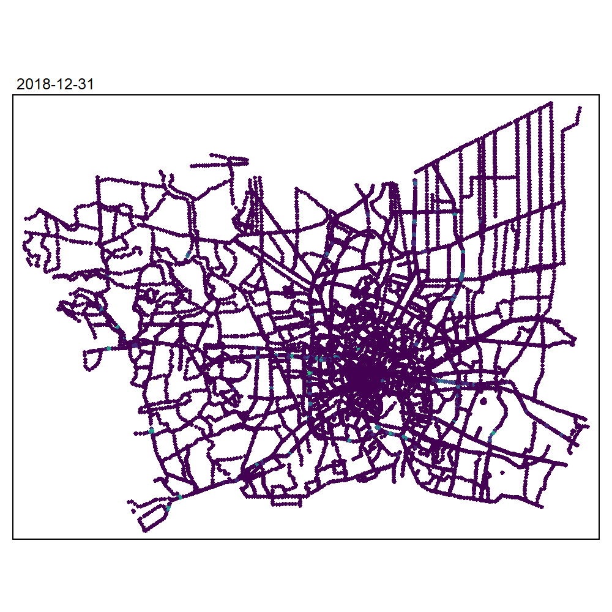
The spatio-temporal map shows that Kanchanaphisek Road, Borommaratchachonnani Road and Industrial Ring Road are serious hotspots for road accidents.
Conclusion
I aimed to uncover factors affecting road traffic accidents in the Bangkok Metropolitan Region (BMR) using spatial and spatio-temporal point patterns analysis methods. Through an examination of accident data from 2019 to 2022, several key insights have emerged:
Spatial Distribution: The analysis revealed that road accidents in BMR are not randomly distributed. There are significant hotspots and areas of concentration, particularly in the central areas of Bangkok and along major highways. This clustering exists at various scales, from local (short distances) to broader areas (longer distances), suggesting specific factors contributing to higher accident rates in certain locations.
Temporal Patterns: Accident frequencies showed clear temporal trends:
Time of Day: Peaks were observed from 7am to 11am and around 7pm, likely corresponding to rush hours.
Days of Week: Friday and Saturday showed higher accident rates.
Seasonal Trends: January, April, October, and December consistently exhibited higher accident frequencies, possibly related to holiday periods and associated increased traffic.
Spatio-Temporal Hotspots: The network-constrained kernel density estimation highlighted several critical areas:
Kanchanaphisek Road (especially the eastern and western portions)
Bangkok-Chonburi Motorway
Borommaratchachonnani Road
Industrial Ring Road
These roads consistently appeared as hotspots across different temporal analyses, indicating persistent safety issues.
These findings have important implications for road safety policies and interventions in the BMR:
Targeted Interventions: Resources should be focused on the identified hotspots, particularly the major highways that consistently show high accident rates. Some possibilities include speed cameras, and stricter laws and fines. Tourists who cause traffic accidents must also be punished and deterred to driving riskily during holiday periods.
Time-Specific Measures: Increased traffic management and law enforcement during identified high-risk periods (rush hours, weekends, and holiday seasons) could help mitigate accident risks.
Road Design Review: The persistent hotspots on specific roads warrant a thorough review of their design and safety features. This could lead to infrastructure improvements aimed at reducing accident likelihood, especially Kanchanaphisek Road and Borommaratchachonnani Road.
Public Awareness Campaigns: Tailored safety campaigns addressing the specific temporal patterns (e.g., holiday season safety, weekend driving risks) could help in modifying driver behavior.
Further Research: While this study has uncovered significant patterns, more detailed investigation into the specific causes of accidents at the identified hotspots is recommended. This could include analysis of road conditions, traffic flow patterns, and driver behavior at these locations.
In conclusion, this spatio-temporal analysis has provided valuable insights into the patterns and potential factors influencing road accidents in the BMR. By leveraging these findings, policymakers and urban planners can develop more effective, data-driven strategies to improve road safety, potentially saving lives and reducing the economic burden of traffic accidents in this crucial region of Thailand.